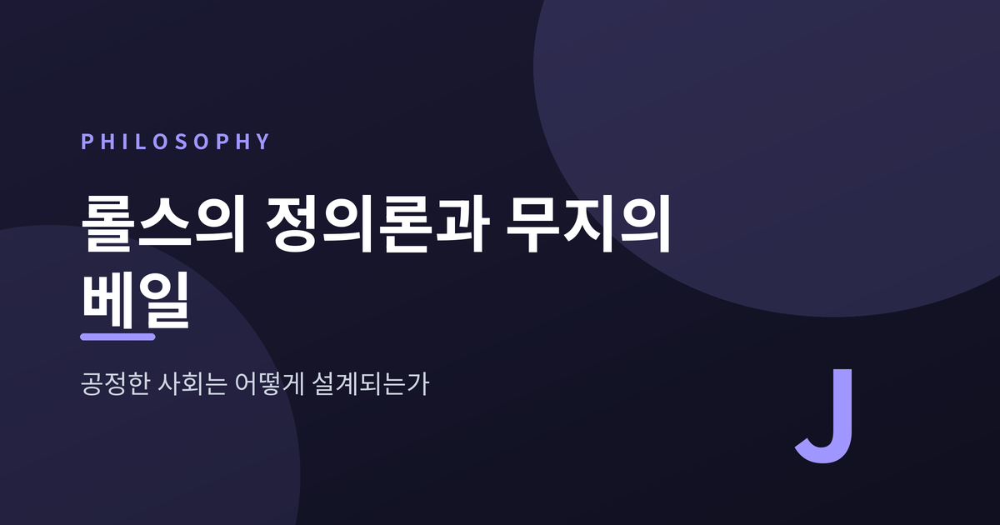
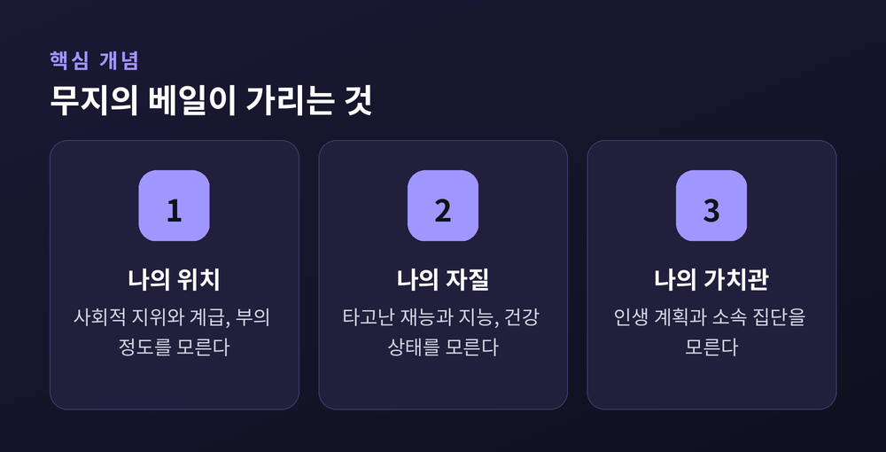
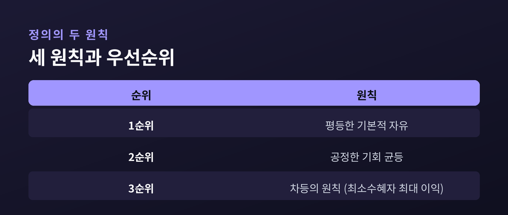
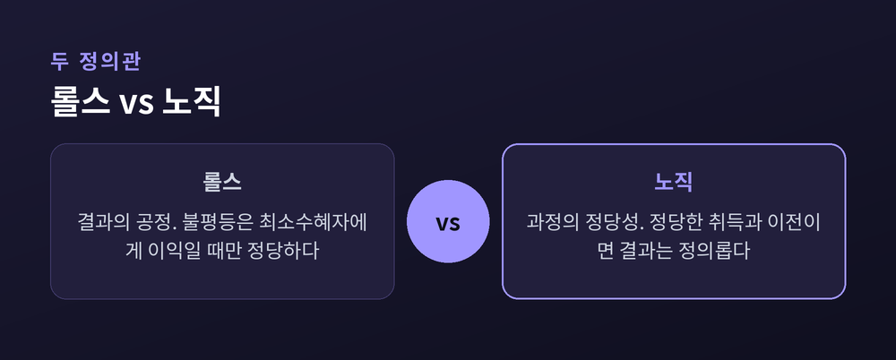

이번 글에서는 존 롤스의 정의론과 그 핵심 장치인 무지의 베일을 정리해 보겠습니다. 공정한 사회란 무엇이며, 그것을 어떻게 설계할 수 있는지 함께 따라가 보려 합니다. 어려운 정치철학의 개념이지만, 하나의 사고실험에서 출발하면 생각보다 명료합니다.
먼저 결론부터 말씀드립니다. 롤스의 답은 이렇습니다. "내가 사회의 어느 자리에 태어날지 전혀 모른다고 가정할 때, 그때 우리가 동의할 규칙이 곧 정의롭다." 이 한 문장이 정의론 전체를 떠받치는 기둥입니다.
존 롤스는 1921년에 태어나 2002년에 세상을 떠난 미국의 정치철학자입니다. 하버드대에서 오래 가르쳤습니다.
그의 대표작 『정의론』은 1971년에 나왔습니다. 당시 윤리학과 정치철학은 공리주의가 지배하고 있었습니다. "최대 다수의 최대 행복"이라는 익숙한 그 원리입니다.
공리주의는 명쾌합니다. 그러나 약점이 있습니다. 전체의 행복 총량만 크면, 소수의 희생은 감수해도 된다는 결론에 이를 수 있습니다.
롤스는 여기에 제동을 걸었습니다. 사회 전체의 이익을 위해 한 사람의 기본 권리를 짓밟는 것은 정의가 아니라고 보았습니다. 그는 오래된 사회계약론의 전통을 현대적으로 되살려, 자신의 이론을 "공정으로서의 정의"라 불렀습니다.
핵심은 절차입니다. 결과를 미리 정해두는 것이 아니라, 공정한 절차에서 나온 결과라면 정의롭다고 본 것입니다.
그렇다면 어떤 절차가 공정할까요. 롤스는 하나의 가상 상황을 설계합니다. 이를 '원초적 입장'이라 부릅니다.
원초적 입장이란, 사람들이 모여 앞으로 함께 살아갈 사회의 기본 규칙을 처음부터 정하는 자리입니다. 일종의 회의실을 떠올리면 됩니다.
이 회의실에 모인 사람들은 자유롭고 합리적입니다. 저마다 좋은 삶을 살고 싶어 합니다. 문제는 하나입니다. 사람은 누구나 자기에게 유리한 규칙을 원한다는 점입니다.
부자는 세금이 낮은 규칙을, 힘센 자는 강자에게 관대한 규칙을 원하기 마련입니다. 이래서는 공정한 합의가 나올 수 없습니다.
롤스의 해법은 대담합니다. 규칙을 정하는 사람들에게서 '자기가 누구인지'에 대한 정보를 아예 지워버리는 것입니다.
바로 이 지점에서 그 유명한 '무지의 베일'이 등장합니다.
무지의 베일을 쓴 사람은 자신에 관한 특수한 정보를 알지 못합니다. 가려지는 것은 대략 이런 것들입니다.
내가 부자인지 가난한지, 그 사회적 지위를 모릅니다. 재능이 뛰어난지 평범한지, 건강한지 아픈지도 모릅니다. 어떤 가치관과 인생 계획을 가졌는지, 어느 집단에 속하는지조차 모릅니다.

이 상태에서 규칙을 정하면 무슨 일이 벌어질까요.
자기가 어느 자리에 떨어질지 모르니, 특정 집단에만 유리한 규칙을 만들 수가 없습니다. 부자에게 유리한 규칙을 골랐다가, 베일이 걷힌 뒤 자신이 가난한 사람으로 판명될 수도 있기 때문입니다.
타고난 우연이 만든 유불리가 규칙 선택에서 사라집니다. 이것이 롤스가 공정성을 확보하는 방식입니다. 자신을 모를 때, 사람은 비로소 모두를 위한 규칙을 생각하게 됩니다.
베일 속에서 사람은 어떤 규칙을 고를까요. 롤스는 '최소극대화'라는 전략을 제시합니다. 어려운 말 같지만 뜻은 단순합니다.
여러 선택지가 있을 때, 각 선택지의 '가장 나쁜 결과'를 비교합니다. 그중 가장 덜 나쁜 것을 고릅니다. 최악의 상황을 가장 견딜 만하게 만드는 선택입니다.
왜 이렇게 할까요. 내가 밑바닥에 떨어질 수도 있기 때문입니다. 그렇다면 밑바닥이 그나마 살 만한 사회를 고르는 편이 안전합니다.
여기서 롤스가 도박을 권하지 않았다는 점이 중요합니다. 평균 기대치가 높은 화려한 사회보다, 최하층의 삶이 보장되는 안정된 사회를 택한다는 것입니다.
물론 이 대목은 논쟁적입니다. 사람이 정말 그렇게 위험을 피하는 쪽으로만 선택하겠느냐는 반문이 있습니다. 이 비판은 뒤에서 다시 다루겠습니다.
무지의 베일 아래에서 합리적인 사람들이 최종적으로 합의하는 것, 그것이 '정의의 두 원칙'입니다.
제1원칙은 평등한 기본적 자유의 원칙입니다. 모든 사람은 남의 자유와 양립하는 한도에서 가장 넓은 기본적 자유를 평등하게 누립니다. 사상과 양심의 자유, 신체의 자유, 정치적 자유 등이 여기 들어갑니다.
제2원칙은 사회·경제적 불평등을 다룹니다. 불평등은 두 조건을 모두 채울 때만 허용됩니다. 하나는 공정한 기회 균등입니다. 좋은 자리는 모두에게 열려 있어야 하고, 비슷한 재능과 의욕을 가진 사람은 출신과 무관하게 비슷한 기회를 가져야 합니다. 다른 하나가 그 유명한 차등의 원칙입니다.

여기서 순서가 결정적입니다. 세 원칙은 엄격한 우선순위로 배열됩니다. 자유의 원칙이 가장 먼저고, 그다음이 기회 균등, 마지막이 차등의 원칙입니다.
앞의 원칙이 충족되기 전에는 뒤의 원칙이 끼어들지 못합니다. 그래서 기본적 자유는 경제적 이득을 위해 결코 팔 수 없습니다. 아무리 부가 늘어난다 해도, 그 대가로 누군가의 기본권을 빼앗는 거래는 성립하지 않습니다.
차등의 원칙은 자주 오해받습니다. "모두 똑같이 나누자"는 주장으로 읽히곤 합니다. 그러나 롤스의 뜻은 다릅니다.
차등의 원칙은 이렇게 말합니다. 불평등이 있어도 좋다, 단 그 불평등이 최소수혜자에게도 이익이 될 때에 한해서.
예를 들어 보겠습니다. 의사나 숙련된 기술자에게 더 높은 보수를 줄 수 있습니다. 그래야 사람들이 힘든 훈련을 감수하고, 사회 전체의 생산성이 오릅니다.
다만 조건이 붙습니다. 그 높은 보수가 정당화되는 것은, 늘어난 결실이 결국 가장 낮은 계층에게까지 흘러가 그들의 처지가 나아질 때뿐입니다. 밑바닥이 나아지지 않는 불평등은 정당화되지 않습니다.
롤스가 나누고자 한 것은 '기본재'입니다. 어떤 인생을 살든 누구에게나 필요한 수단입니다. 권리와 자유, 기회와 권한, 소득과 부, 그리고 자존감의 사회적 기반이 그것입니다. 롤스는 이 가운데 자존감을 가장 중요한 기본재로 꼽았습니다.
한 가지 덧붙이면, 이 모든 결론은 하늘에서 떨어진 공리가 아닙니다. 롤스는 '반성적 평형'이라는 방법을 씁니다. 원칙과 우리의 도덕적 직관을 서로 견주며 어긋나는 부분을 조금씩 맞춰갑니다. 원칙이 직관에 크게 어긋나면 원칙을 손보고, 직관이 편견이면 직관을 버립니다. 그 왕복 끝에 균형점을 찾는 것입니다.
롤스의 이론이 완벽한 것은 아닙니다. 가장 날카로운 반론은 로버트 노직에게서 나왔습니다.
노직은 1974년 『아나키, 국가, 유토피아』에서 롤스를 정면으로 겨냥했습니다. 그의 핵심 개념은 '소유권리론'입니다.
노직이 보기에 정의는 결과의 모양이 아니라 과정의 정당성입니다. 정당하게 처음 손에 넣고, 정당하게 주고받았다면, 그 결과가 아무리 불평등해도 정의롭다는 것입니다.

이 관점에서 차등의 원칙은 위험합니다. 결과를 특정한 모양에 맞추려면, 사람들의 자발적 거래를 국가가 끊임없이 간섭해야 합니다. 노직은 이것을 개인의 자유와 소유권에 대한 침해로 봅니다.
노직은 또 개인의 재능을 '사회의 공동 자산'처럼 다루는 롤스의 전제를 비판합니다. 내 재능의 결실은 내 것이지, 사회가 나눠 가질 몫이 아니라는 것입니다. 그래서 그는 국가의 역할을 최소한으로 줄인 '최소국가'를 옹호합니다.
한편 마이클 샌델은 다른 각도에서 비판합니다. 무지의 베일이 상정하는 인간은 자기 역사와 소속에서 완전히 떨어져 나온 '무연고적 자아'인데, 그런 텅 빈 개인은 현실에 없다는 지적입니다. 다만 롤스를 옹호하는 이들은, 원초적 입장은 어디까지나 가상의 장치일 뿐 실제 인간을 그렇게 묘사한 것이 아니라고 반박합니다.
정리하면 이렇습니다. 롤스는 정의를 '공정한 절차'의 문제로 바꾸어 놓았습니다. 무지의 베일은 그 절차를 공정하게 만드는 상상의 도구입니다.
이 사고실험의 힘은 지금도 살아 있습니다. 세금과 복지, 의료 자원의 배분, 나아가 인공지능의 공정성을 논할 때에도 우리는 같은 질문을 던지게 됩니다. "내가 어느 자리에 놓일지 모른다면, 나는 어떤 규칙에 동의하겠는가."
완전한 정답은 아닐지 모릅니다. 노직의 반론처럼, 공정을 좇다 자유를 침해할 위험은 늘 남아 있습니다. 그럼에도 이 질문 하나는 오래 남습니다.
당신이 태어날 자리를 고를 수 없다면, 지금의 이 사회에 기꺼이 동의하시겠습니까.